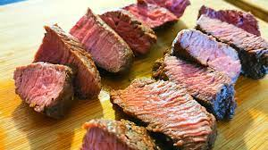

Ostrich Steak Recipe

Steak of Giant Flightless Bird
Ingredients
- 4 Ostrich steaks, each weighing 150-200g
- 1 Tablespoon of butter
- 1 White Onion, medium, grated
- 1 Sprig of thyme
- 100ml of beef stock
- 200ml of red Wine(Optional), good quality
- 250g of mushrooms, of your choice
- 2 Tablespoons of double cream
- Salt, to taste
- pepper
Steps
- To cook the ostrich steaks, heat the butter in a large frying pan over medium heat. Cook the ostrich steaks until the outside is lightly crisp and caramelised, for about 2 mins per side. If using meat thermometer, the meat should reach 63 degrees celsius inside. Remove the ostrich steaks from the pan and allow to rest in a warm place.
- Add another knob of butter to the pan and add the onion and garlic. Cook until a light gold colour, then pour in the wine, the stock and the thyme. Allow to simmer and reduce by half- the sauce should look smooth and glossy.
- Add the mushrooms, cook on a low heat for another 2 mins, then pour in the cream, mixing well. Taste for salt and pepper, switch off the heat and spoon the sauce over the steaks to serve.